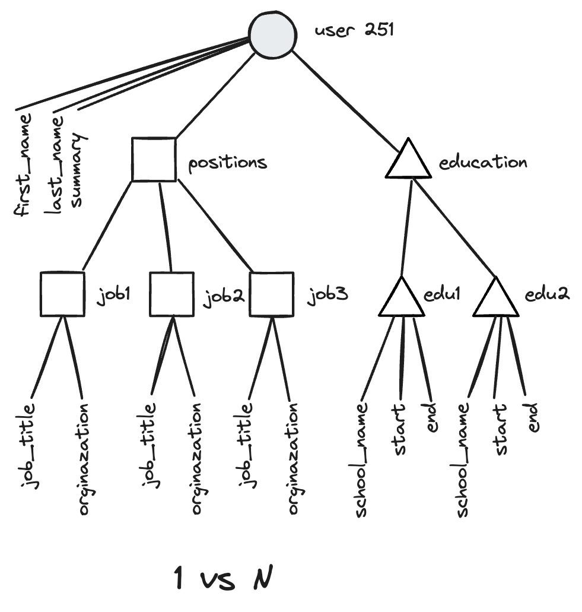

第2章 数据模型和查询语言
本章主要讲了数据模型，以及围绕模型所构建的查询语言。
数据模型
关系模型
由Edgar Codd与1977年提出，这种模型将数据组织成关系（relations），在SQL中称为表（table），其中每个关系都是元组（tuples）的无序集合，也就是SQL中的行。
MySQL、Oracle、PostgreSQL等一众大家耳熟能详的数据库都属于此类。适用于：
- 结构一致的数据。
- 事务性要求比较高的情况，比如金融、银行等领域。
文档模型
所谓文档模型就是可以直接存储json、xml等非结构化数据，数据的关系和模式不再是首要关注的对象。相关的产品有Redis、MongoDB、HBase等等。
NoSQL[1]：不仅仅是SQL
最初作为一个标签出现在2009年的开源、分布式以及非关系数据库的见面会上。
NoSQL的优势：
- 扩展性更好，支持超大数据集或超高吞吐量。
- 大部分是免费开源，成本优势。
- 查询的局部性更好，也就是一次将所有数据都查出来了，不用做联结和子查询。
- 更具动态和表达力的数据模型，和应用程序数据结构比较接近，减少了阻抗失谐[2]。
树模型
一个示例，下面是比尔盖茨个人简历的json描述：
{
"user id": 251,
"first_name": "Bill",
"last_ name": "Gates",
"summary": "Co-chair of the Bill & Melinda Gates... Active blogger.",
"region id": "us:91",
"industry_id": 131,
"photo ur1": "/p/7/000/253/05b/308dd6e.jpg",
"positions": [
{"job_title": "Co-chair", "organization": "Bill & Melinda Gates Foundation"},
{"job_title": "Co-founder, Chairman", "organization": "Microsoft"}
],
"education": [
{ "school_name": "Harvard University", "start": 1973, "end": 1975 },
{ "school_name": "Lakeside School, Seattle", "start": null, "end": null }
],
"contact info": {
"blog": "http://thegatesnotes.com",
"twitter": "http://twitter.com/BillGates"
}
}
画成图是这个样子。
可以看到是一层一层的，像一棵树，所以有时候也称为层次模型或树模型。
其实json并非没有模式，只是和关系模型相比，一个是写式模式（显式），一个读时模式（隐式），json格式更易修改，不用像关系数据库得修改表结构。
json拥有更好的局部性，不用联接（join）多张表或者多次查询，但仅限于访问大部分数据情况，无法像关系数据库返回特定字段。
json擅长处理1 vs N，不擅长处理N vs 1和N vs N。想支持只能在应用层使用代码做，另外是不是还增加了数据冗余度，因为不能像关系数据库那样通过外键引用同一份数据。
网络模型
不像层次模型，每个记录只有一个父节点，网络模型可以有多个父节点，比如“大西雅图地区”可能是一个记录，居住在该地区的用户都指向它，因此可以方便的支持多对一和多对多。
比如这个多对多的例子。
融合数据库
关系数据库和文档数据库呈现出融合趋势，主流的关系数据库PostgreSQL、MySQL、DB2已经支持json、xml等常用文档类型。文档数据库RethinkDB查询接口支持和关系型类似的联结，MongoDB驱动程序可以自动解析数据库的引用关系。
图状数据模型
关系模型可以勉为其难的处理多对多，但是还是图模型更自然。
图有两种对象构成：顶点和边，典型的例子：
- 社交网络：顶点是人，边指示哪些人彼此认识。
- Web图：顶点是网页，边表示网页之间的超链接。
- 公路或铁路网：顶点是交叉口，边表示它们之间的公路线或铁路线。
一个示例，来自社交网络的族谱数据库，来自爱达荷州的Lucy和来自法国波恩的Alain，他们结婚了，目前住在伦敦。
图模型最大的特点就是灵活，它的灵活性来自于：
- 任何顶点之间都可以连接。
- 给定某个顶点，可以高效的得到它的入边和出边，从而遍历图。
- 可以在同一张图的同一顶点之间标记不同的标签来表达不同的关系，同时仍然保持图的整洁。
图数据模型可以使用关系数据库和三元存储实现。
关系数据表
如果是关系数据表实现，相应地可以用SQL查询，但是写起来比专门的图查询语言麻烦多了。
CREATE TABLE vertices (
vertex_id interger PRIMARY KEY,
properties json
);
CREATE TABLE edges (
edge_id integer PRIMARY KEY,
tail_vertex integer REFERENCE vertices (vertex_id),
head_vertex integer REFERENCE vertices (vertex_id),
label text,
properties json
);
CREATE INDEX edges_tails ON edges (tail_vertex);
CREATE INDEX edges_heads ON edges (head_vertex);
三元组
几乎等同于属性图模型，所有信息都表示为（主体，谓语，客体）。例如，（吉姆，喜欢，香蕉）。三元组的主体相当于图的顶点，客体可能是：
- 属性值，比如（lucy，age，33）。
- 顶点，比如（lucy，marriedTo，alain）。
以Turtle[3]三元组的形式表示图：
@prefix : <urn:example:>.
_:lucy a :Person; :name "Lucy"; :bornIn _:idaho.
_:idaho a :Location; :name "Idaho"; :type "state"; :within _:usa.
_:usa a :Location; :name "United States"; :type "country"; :within _:namerica.
:namerica a :Location; :name "North America"; :type "continent".
RDF（Resource Description Framework）是一种基于xml的资源描述框架，目的是为不同的网站定义一种通用格式，这样不同的网站可以自动合并成一个数据网络，一种互联网级别包含一切数据的数据库。
我个人觉得Turtle是给人看的三元组，RDF是给机器看的三元组。
语义网
语义网源自大家想创建一种囊括互联网所有数据的大数据库的设想，为了创建这种数据库，需要所有人都遵守一种通用格式，就像人为了能够理解彼此，必须得说同样地语言，为了描述这种格式诞生了RDF。
在可预见的未来，大多数系统会同时使用关系数据库和NoSQL数据库，称为混合持久化。
数据查询语言
命令式
需要告诉程序一步一步怎么做，大多数的编程语言都属于此类。
声明式
告诉程序做什么即可，具体怎么做程序自主决定，如SQL、web中的css和xsl。
SQL
比如使用SQL查询每个月看到了多少鲨鱼。
SELECT date_trunc('month', observation_timestamp) AS observation_month,
sum(num_animals) as total_animals
FROM observations
WHERE family = 'Shark'
GROUP BY observation_month;
聚合管道
MongoDB 2.2增加了聚合管道的声明式查询语言，相当于SQL的子集，基于json语法。它的等效表达如下：
db.observations.aggregate(
{ $match: { family: "Shark" } },
{ $group: {
_id: {
year: { $year: "observationTimestamp" },
month: { $month: "observationTimestamp" }
},
totalAnimal: { $sum: "$numAnimals" }
}
);
感觉某种程度上，可以看成是文档数据库的SQL语言。
Cypher
Cypher查询语言，一种属性图的声明式查询语言，最早为Neo4j图形数据库而创建。比如，使用Cypher查询从美国移民到欧洲的人员名单：
MATCH
(person) -[BORN_IN]-> () -[:WITHIN*O..]-> (us:Location {name:'United States'}).
(person) -[LIVES_IN]-> () -[:WITHIN*O..]-> (eu:Location {name:'Europe'}).
SPARQL
SPARQL（发音：sparkle），是一种基于RDF的查询语言。比如，执行同样的查询，比Cypher
更加简洁[4]。
SELECT ?personName WHERE {
?person :name ?personName.
?person :bornIn / :within* / :name "United States".
?person :liveIn / :within* / :name "Europe".
}